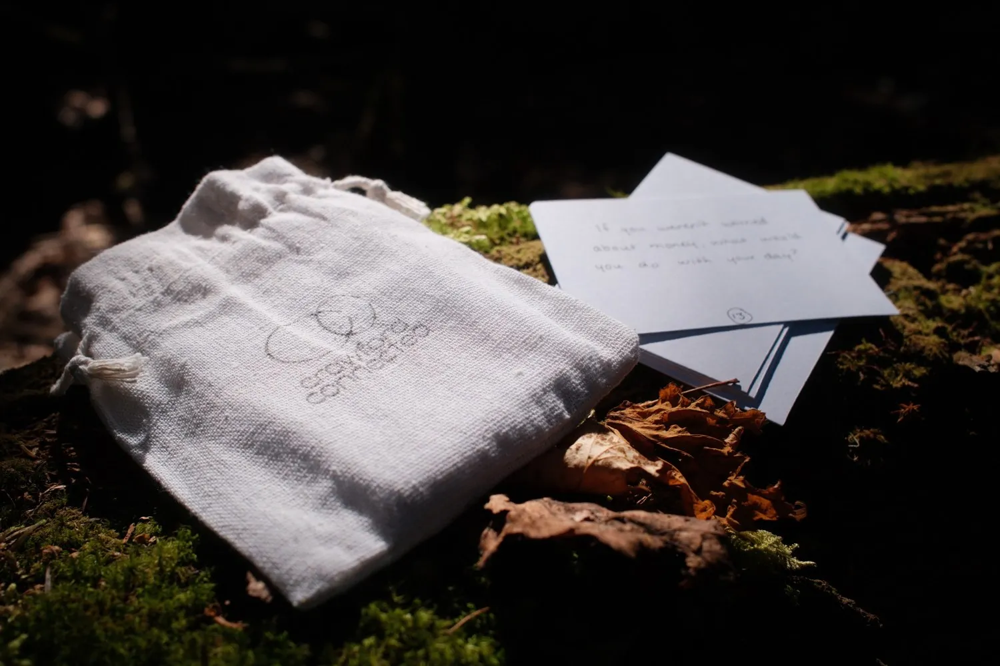
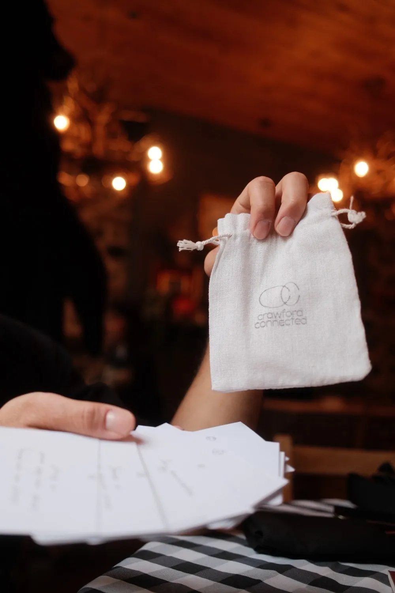
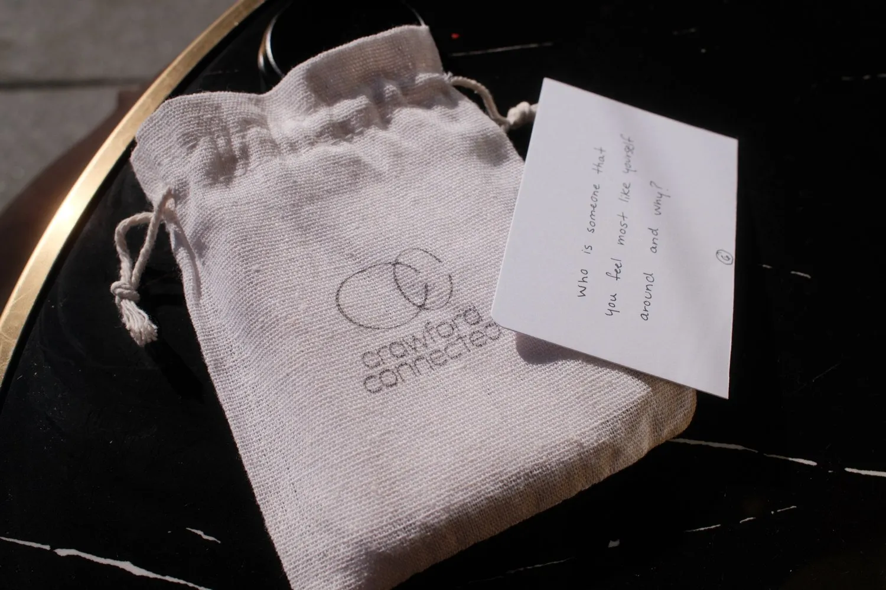
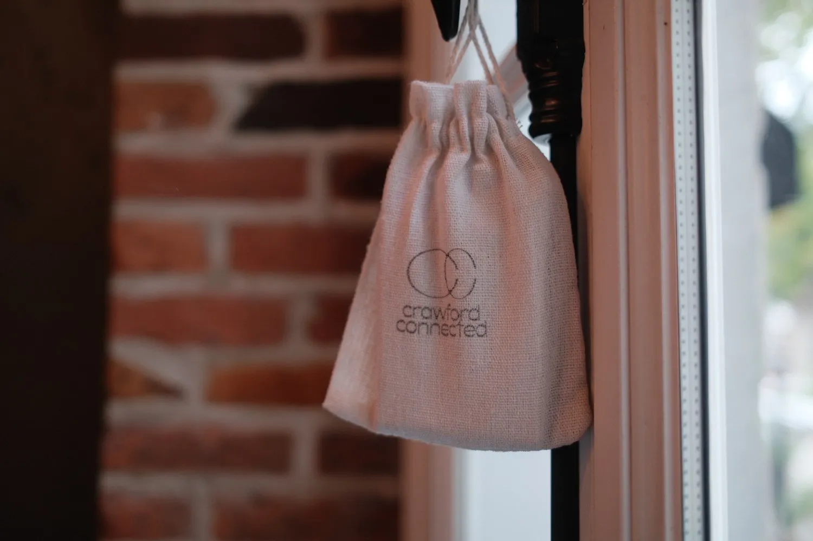

Connection Cardsby
Ask something real.
A portable deck of questions that act as an ice breaker in our digital world.
It is 52 selected questions that bring warmer and deeper conversation that we can often miss today. Connection Cards are an invitation to be curious, to move beyond the questions we’ve been taught to ask, and to truly see ourselves and one another.
Follow alongTurn the card
- 1Pick a number
- 2One asks, one answers
- 3Let it linger
The Philosophy
There are entire worlds inside of ourselves and the people sitting across from us.
The philosophy of connection cards came from the idea that there are entire worlds within the people around us, but we don’t often get to access it because of the limits of the questions we ask. We tend to ask the same questions, tell the same stories, and forget how much is left to discover from one another.
When more thoughtful, unexpected and intentional questions are asked, it can make us pause, reflect, remember, and see things from a new perspective.
And we may discover just as much when we answer as we do when we ask.
Be curious. Be present.
One good question.
A deck of handwritten questions that moves conversation past small talk, one good question at a time.
Who is someone you feel most like yourself around, and why?
6If you weren’t worried about money, what would you do with your day?
13Who it’s for
Our first deck is designed to be general to fit anyone who might come into your world:
- lifelong friends,
- partners,
- family members,
- travel companions,
- new acquaintances,
- or complete strangers
There’s always something new to discover.
Where the cards live
- On a date
- Girls’ trip
- Family dinner
- Christmas table
- Road trip
- With your partner
- A night with friends
- Solo journaling
The Backstory
I dreamt of creating this deck for years. Let me give you a bit of backstory.
Throughout the hardest and most joyful moments, I used journaling and prompts as a way to better understand and express myself.
Sharing those prompts with others allowed me to speak honestly and listen more curiously. A single question could lead to effortless conversation that we never would have anticipated.
In times when I was travelling and meeting new people each day, I noticed conversations returned to the same questions. Where are you from? Where are you going? How long are you travelling?
Much like the “How are you?” Did you hear it’s gonna rain this afternoon? What do you do for a living? Even well-intentioned questions become automatic.
I wished I’d had a deck like this in my bag. Travelling solo, sharing a meal, or meeting a stranger. It would have broken the ice. It would have created an experience and a moment of connection.
When it came to love, I wanted to understand who someone really was before letting my feelings lead the way. I wrote 52 questions in my journal and would say: “Pick a number.”
Those experiences became the foundation for Connection Cards.
Allie




What’s in the bag
- The deck, handwritten questions, card backs showing the mark
- A “how to use” card
- A linen drawstring bag, stamped in black ink
How to use
- Pick a number, or a card.
- One person asks. The other answers.
- Let it linger. Ask follow-ups. Don’t turn it back.
- Listen to be curious, not to prepare.
- Make the questions your own.
Be the one who inspires others.
How to use
One person asks, the other answers.
Ask follow-up questions and give the space to be heard without rehearsing your own response.
Don’t let the questions limit you.
Follow the conversation as far as it feels right. Reframe a question or let it inspire one of your own. Make the experience your own, in a way that suits the moment and the person you’re sharing it with.
Bring them:
- On a date, to a gathering, on your travels, or open them up with your family.
- Tuck a few into your pocket.
They’re meant to move with you where life brings you.
Future Decks
Connection Cards are more than a single deck. They are the beginning of the ongoing intention of human connection.
General ice breaker
While our first deck is designed for any relationship in your life, our longer-term vision is to collaborate with individuals and communities to develop thoughtfully curated decks that support specific environments, relationships, and needs across generations.
Get Curious. Get Connected.
Our first deck is currently in the making, and we’d love for you to be part of the journey.
Follow along as Connection Cards comes to life. [Instagram link: which account?]